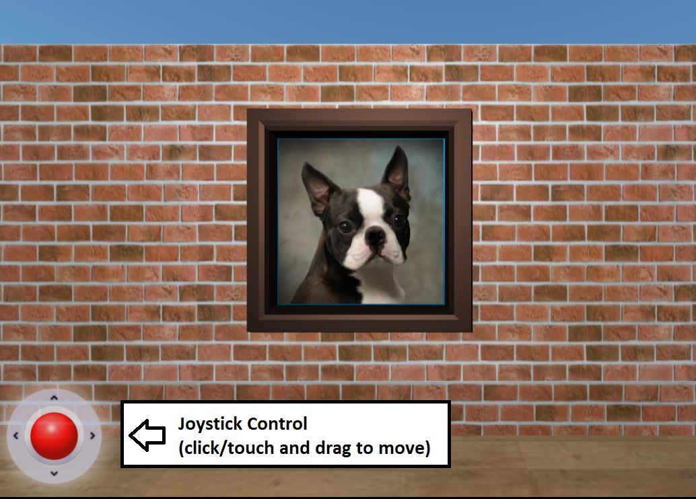

Virtual Art Gallery - Test Pages
You may navigate the scene using either a mouse (on laptop/desktop computers) or touch controls (on smartphone/tablet)
- To move, click/touch and drag the joystick control.
- To turn, click/touch and drag any point near the center of the scene.
